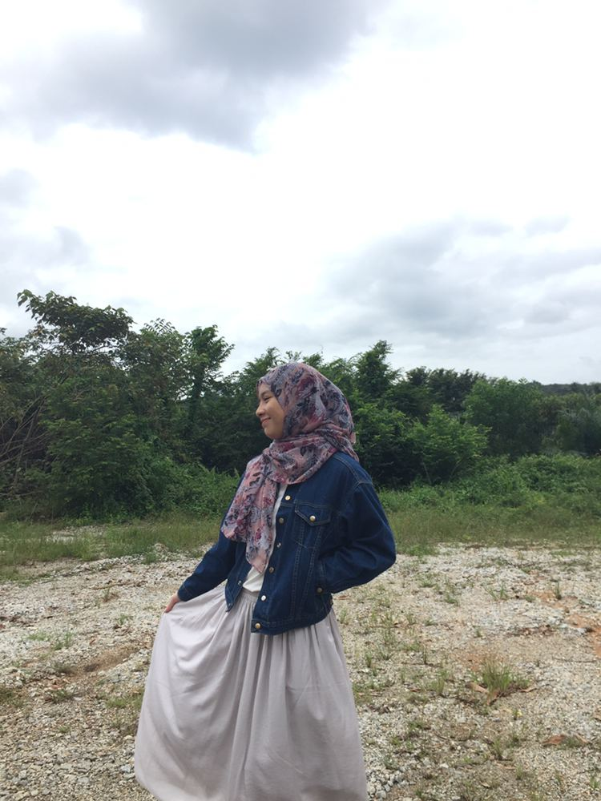

Name: Siti Nur Nadira binti Abdul Aziz
Age: 20 years old
Place of Birth: Hospital Shah Alam, Selangor
Date of Birth: 10th November 2000
Study: Diploma in Information Management in UiTM Campus Rembau
What I love to do: I spent my times watching kdrama, I eat a lot and I love to hangout with my friends espcially to the beach. Besides that, I love to play games like PUBG or COD.
Places I want to go: Maldives..and anywhere with my beloved friends :p

One of my favourite things to do is go on a trip with my friends. We usually went to the beach because it is our favourite place to loose our minds from any problems that we had. Beach is place where we can find inner peace. You want to know what, if I could have any superpower, it would be to go back to the past, in short term, time machine. It is because I want to change every miserable things that happen in my life and keep my loved on with me till now. One thing I know I do well is being a good friend that always there to help my friends in any circumstances. But, some people does not appreciate it. Plus, I had a dream to do everything with my friends like doing business together, live together, study together, or maybe grow old together. We never know what will happen in the future. Like my friend always said to me, what is meant to be yours will always be yours and if not, you just have to accept the reality. One struggle I’ve had that has made me who I am now is when I have to be strong no matter what happen in our life and I hope when I remember about the past, it wont hurt me ever again. Enough with the sadness, now I want to tell you all if I could live anywhere in this world, it would be anywhere that has a beautiful scenery of nature. One thing on my bucket list is do a lot physical activities with my friends.
My favourite comfort is absolutely everything that my mom cooks. I think anyone would agree that mom’s cook is unbeatable. Its hard to choose which one is the most delicious. Eating while watching movies is the best and if I had trapped in a movie for a day, I would choose Love,Rosie. Furthermore, one thing that I most afraid was cats. I know its funny because cats are cute but some people like me do afraid of cats and we do not even know why. Let me share a secret. If I had the chance to be a different personality than who I am now, I would speak straightforward to people that I hate what they did and I would turn down my ego to keep my important people around me. If I get to choose my next life, I want to be a person that is respected and appreciated by people around me. I want to be a successful person that can make my family live happily without worrying about finances.